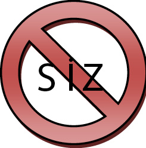
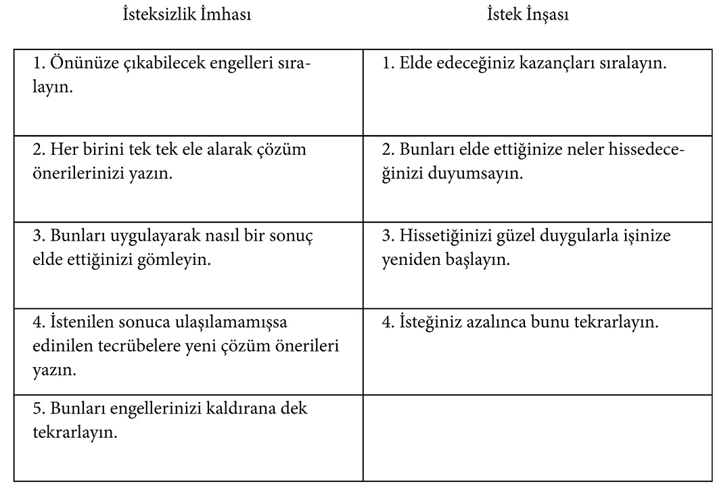

BÖLÜM 6 - ARZU DUYMAK
• Bir tutkumuz, bir arzumuz, bir rüyamız yoksa geriye kalan kısmıyla yaşam ne ifade ediyor acaba?
• İstek bizi hayallerimize doğru iten en önemli güçtür.
• Hayalinize düşüncelerinizle birlikte hislerinizi de katınız.
• İsteklerimizi elde etmenin bir bedeli var.
ARZU DUYMAK
• Bir tutkumuz, bir arzumuz, bir rüyamız yoksa geriye kalan kısmıyla yaşam ne ifade ediyor acaba?
Geçici olan heveslerle karıştırılmamalıdır tutku. O kendi içinde yok olmayan bir değere sahip olmalıdır. Bunlar:
• Kişilerin, toplumun, insanlığın yararına katkıda bulunmak;
• İyiliğin yayılmasını sağlamak;
• Yaşadığı çevreyi güzelleştirmek;
• Neresi olursa olsun oranın daha iyi bir seviyeye ulaşması için çaba sarf etmek;
• Kendinin ve insanlığın ilerlemesi adına fikirler üretmek, değişime öncülük etmek, yeniliklerin kalıcı olmasını sağlamak… Olabilir.
Sizin tutkularınız neler?
“Sıradan insanların hevesleri, büyük insanların ise idealleri vardır.”
Washington Irving (1783-1869)
Ünlü şair Emily Elizabeth Dickinson (1830-1886) dizelerinde tutkusunu şöyle dile getiriyor:
“Bir tek kalbin kırılmasını önleyebilirsem,
Boşuna yaşamış olmayacağım.
Bir yaşamdan acıyı alabilirsem
Ya da bir acıyı hafifletebilirsem,
Ya da bir ardıç kuşunu yeniden yuvasına koyabilirsem
Boşuna yaşamış olmayacağım...”
Rüyalarınızı neler süslüyor: Büyük bir ev, son model bir araba, bankada yüklü miktarda mevduat hesabı, şöhret… Elbette bunlar da rüyalarınızda yer alabilir ancak “Yüksek bir amaca bağlanın,” diyen ünlü düşünür Ralph Waldo Emerson’un (1803-1882) yaşam için farklı pencere açan şu sözlerine de bir kulak verelim:
“Sık sık gülmek ve çok sevmektir;
Zeki insanların saygısını
Ve çocukların sevgisini kazanmaktır;
Dürüst eleştirmenlerin onayını almak;
Sahte dostların ihanetine dayanmaktır;
Güzeli sevmektir;
Herkesteki en iyiyi bulmaktır;
Geride ister sağlıklı bir çocuk,
İster kurtarılmış bir ruh,
İster bir parça yeşil bahçe,
İster iyileştirilen bir sosyal durum bırakarak
Dünyanın iyileşmesine katkıda bulunmaktır;
Gönlünce eğlenmek ve gülmek;
Kendinden geçerek şarkı söylemektir;
Tek bir kişi bile olsa,
Birinin sizin varlığınızdan dolayı
Daha rahat nefes aldığını bilmektir;
İşte bu, başarılı olmaktır.”
Tutkularımızın, arzularımızın, rüyalarımızın niteliği yaşamı nasıl tanımladığımızın ve ona hangi anlamları yüklediğimizin en önemli göstergesidir.
Belirlenmiş amaçlara sahip olmayanlar belirsiz bir hayat sürerler. Belirsiz bir hayatın ise oldukça ağır bir faturası olur.
“Büyük tutkular, büyük ruhlar içindir.”
Oscar Wilde (1854-1900)
İstek bizi hayallerimize doğru iten en önemli güçtür.
Menlo Park’ında 31 Aralık 1879 yılbaşı gecesi büyük bir kalabalık toplanmıştı. Ünlü mucit Thomas Alva Edison, son icadı elektrik ampulünü halka tanıtacaktı. Bu sırada izleyicilerden biri; “Kızgın saç tokasını o şişenin içine nasıl soktunuz?” diye sordu, at nalı biçimindeki karbon filamanı kastederek.
Ancak mevcut şartların üstünde bir amaca gönül verenler, rüyalarında bile belirledikleri hedeflere yol alanlar, düşleriyle yatıp düşleriyle kalkanlar, istediklerini elde edene dek, aylarca, yıllarca uğraşmak zorunda kalsalar da, onlarca yüzlerce kez başarısız da olsalar sonunda onların arzuları, o kızgın saç tokasının cam şişenin içinde parlamasını sağlamaksa, kesinlikle bunu yaparlar.
İstek insanı harekete geçirir, tıpkı bir arabada gaza basmak gibidir.
İsteksizlik ise yaşamda ayağınız frende bir hayat sürmenize neden olur.
Siz durursunuz hayat akar geçer.
Siz durursunuz yaşam devam eder.
Siz durursunuz zaman durmaz.
Siz durursunuz…
Ama biz durmak için gelmedik ki bu dünyaya!
“Bir ağaç boy atmayı ne kadar özlerse kendini o kadar yüksek bir atmosferde bulur.”
Henry David Thoreau (1817-1862)
Eğer düşlerinizin önüne kendinizi sınırlayarak, kötümser bir yaklaşımla, inancınızı kaybetmiş olarak, isteksiz, motivasyonsuz, tembellik ederek, yeterli çabayı sergilemeden engeller koyuyorsanız başka engellerinizin olmasına hiç mi hiç gerek yok:
Düşlerinizin önünde SİZ kocaman bir engel olarak durmaktasınız.

Yaşlı kadın, iş bulma bürosundan gönderilen şoförün bonservisini inceledikten sonra:
“Daha önce özel arabada çalışmış mıydınız?” diye sorar.
Ne olursa olsun bu işi kaçırmamayı kafasına koymuş olan şoför:
“Çalışmadım ama çalışırım,” diye istekle cevaplar.
“Şehirlerarası uzun yolculuklara çıkmış mıydınız?”
“Çıkmamıştım ama gerekirse çıkarım.”
Bonservisi sahibine uzatan kadın:
“Pekâlâ,” der. “Hiç kaza yaptınız mı?”
Sorulara kendini kaptıran şoför heyecanlı bir şekilde şöyle cevap verir:
“Hiç kaza yapmadım efendim. Ama gerekirse inanın onu da yaparım!”
Yüreğinizin derinliklerinde yatan hayalleriniz, ona ulaşmak için duyduğunuz arzu ölçüsünde gerçeğin yüksek tepelerinde yerini alacaktır. Arzu, istek, heyecan, aşk olmadan bir hayalin gerçeğe dönüşmesini beklemek yakıt tankları olmayan bir mekiğin uzaya gitmesini beklemek gibidir… Bu bekleyiş, nasıl bir sonuç vermeyecekse, yeterince arzu fırtınası oluşturamadığımız hayalimizde aynı hüsranla son bulacaktır.
“Büyük hayaller kurun; çünkü sadece büyük hayaller insanların ruhlarını harekete geçirecek güce sahip olurlar.”
Marcus Aurelius (121-180)
Bir hayalimiz varsa ve ona çeşitli sebeplerden (ulaşılamaz hissi, şartların olumsuzluğu vs.) isteğimiz azalmışsa veya o arzumuzun bize kazandıracaklarını etraflıca masaya yatırmamışsak “istek” yakıtını tam olarak kullanamıyoruz demektir. Bunun için:

• İstek, sonuca ulaşmada size çözümler üretir.
• İstek, bir kapı kapandığında diğerini arar, bulur ve açmak için zorlar.
• İstek, içten gelir ve size ihtiyacınız olan içtenlikle çalışma azmi verir.
• İstek, sınırları zorlar, çıtayı yükseltir ve engelleri bir bir aşarak sizi daha da ileriye taşır.
• İstek, harekete geçirir, durgun suları gürül gürül akan çağlayanlar haline getirir.
• Yaşamda ya isteksizsiniz ya da istekSİZsiniz.
Kavramları yeniden tanımlayalım:
İSTEKSİZ = İSTEK SİZ-siniz (Bu kavram bize, isteğin dışarıdan değil içeriden gelen bir duygu olduğunu, bunun tamamen size bağlı olduğunu anlatıyor. Bu da istek sizin tarafınızdan yeniden oluşturulabilir demektir.)
Bizi hayallerimize kavuşturacak bir sihirli değnek varsa o da arzudur. Arzunun şiddeti sayesinde her an zihnimizde hayallerimize ulaşma yolları ararız, hangi engel çıkarsa çıksın yeni bir yol deneriz, bir daha, bir daha…
Gece geç yatar, sabah erken kalkarız. Arzumuz sayesinde sonuna kadar dayanacak gücü buluruz. Bu sebeple arzumuzun şiddeti sihirli değneğimizin gücünü belirler.
“İstemek yetmez, hedefe ulaşmak için şiddetle arzulamak gerekir.”
Publius Ovidius (M.Ö.43-M.S.17)
Aynı hedefe giden iki kişiden hangisinin hedefe daha önce ulaşacağını içlerinde hissettikleri “istek farkı” ortaya koyar.
“İsteğiniz uyandığında ayaklarınız hafifler.”
George Herbert (1593-1633)
Yolcunun biri, seyahati sırasında bir köylüye rastladı, çalışırken tarlada. Yolcunun isteği bilgi almaktı, yürüdüğü yol hakkında.
Sordu: “Kaç saatte gidebilirim şu ileriki kasabaya?”
Köylü suskun kaldı bu soruya. Bunun üzerine yolcu devam etti yoluna. Ama köylü seslendi biraz sonra: “Böyle gidersen, iki buçuk saatte varırsın bizim kasabaya.”
Yolcu merak etti, cevabını neden geç verdiğini. Uzaktan tekrar sordu köylüye, bu hareketinin sebebini. Köylü hem işine devam etti, hem de: “Ne hızla yürüdüğünü görmemiştim ki,” dedi.
Yaşam da böyledir aslında, hedeflediğimiz başarıya ulaşma hızımız; o yolda atacağımız adımların hızına bağlıdır...
Coşku için hedefler olmalı, hayaller olmalı. Bunları gerçekleştirmek için her gün çalışmalı insan. Hayallerini gerçekleştirdikçe coşku artacak ve derinlik kazanacaktır. Yani günlük hayatında, rutin işlerle uğraşırken de coşkusunu, yaşam enerjisini koruyacaktır. İdealler insan yaşamı için coşkunun direkleridir, onu ayakta tutar ve birbirinden beslenerek yol alır.
Eğer siz bir şeyler yapmak istiyor ve bunda çevrenizdekilerin yardımına da ihtiyacınız varsa bu işe katılmalarını sağlamak için ilk olarak onlarda istek uyandırmalısınız. Ardından işin nasıl yapılacağını konuşabilirsiniz. Eğer siz bir lider, patron veya yönetici iseniz çalışanlarınıza sadece yapmaları gereken şeyi söylerseniz, yalnız o söylediklerinizi veya daha azını alırsınız. Ama önce istek duymalarını sağlarsanız beklediğinizden daha fazlasını alacağınıza hiç şüpheniz olmasın.
“Hiç kimse coşkusunu kaybetmiş olanlardan daha yaşlı değildir.”
Henry David Thoreau (1817-1862)
“İnsan başarmak için sınırsız istek duyduğu her şeyin üstesinden gelebilir.”
Charles M. Schwab (1862-1939)
• Hayalinize düşüncelerinizle birlikte hislerinizi de katınız.
Psikiyatr, kendisine başvuran hastayı dinledikten sonra yorumunu yaptı:
“Evet, sanırım sorununuzun çözümünü biliyorum. Kendinizi daha istekli hissetmelisiniz; daha etkin ve girişken olmanız gerekiyor. İşinize dört elle sarılmalısınız. Bu arada, ne tür bir iş yapıyorsunuz?”
Hasta gayet sakin cevap verdi: “Mezar kazıcısıyım!”
***
“İstek insanın içinden kendiliğinden gelen bir duygudur; bir şey ya istenir ya da istenmez” diyebilirsiniz.
Ancak istek duygumuzun bize sağlayacağı katkılar var ve biz bundan yararlanmalıyız.
“En fazla ileriye giden ok, en geriye çekilmiş yaydan çıkar.”
Çin Atasözü
Düşlerinizi zihninizde canlı tutun. Onu gerçekleştirdiğinizde neler hissedeceğinizi bir düşünün. Onu düşlerinizde görün, bir şey başarmak istiyorsanız alkışları duyun, bir şey elde etmeyi hedeflemişseniz ilk önce düşlerinizde ona dokunun, ortamın kokusunu dahi hissedin, kavuştuğunuz hayalin damağınızda ve yüreğinizde oluşturduğu tadı alın.
İşte şimdi hayalinize, düşüncelerinizle birlikte hislerinizi de kattınız. Bu ona ulaşma arzunuzu artıracaktır. Arzu ne kadar artarsa engeller o kadar gözünüzde küçülecektir. Arzunuzun ateşi önünüze çıkan engelleri yakıp kavuracaktır.
“İlgisizlik sadece coşkuyla alt edilebilir ve bu duygu da ancak iki şeyle uyandırılabilir; bunlardan ilki hayal gücümüzü hemen ele geçirecek bir ideal ve ikincisi de bu ideali pratiğe dökecek belirgin ve anlaşılır bir plandır.”
Arnold Toynbee (1889-1975)
Can sıkıntısının ana nedeni istekli olarak yapacak bir işimizin, meşguliyetimizin, hedefimizin olmamasıdır. Eğer hayallerinizi önemseyen biriyseniz “can sıkıntısı” diye bir deyimin lügatınızda olmadığını göreceksiniz. Çünkü insan hayallerine ulaşabilmek için her an bir şeyler yapma eğilimindedir. Bu durumda “boş zaman” kavramı ve “şimdi ben ne yapacağım” düşüncesi olmayacağından “can sıkıntısı” da oluşamayacaktır. Hayalleri olanların “can sıkıntısı”na bile ayıracak zamanları yoktur. İdealler için duyulan arzu, tıpkı sürekli çalışan bir makineye sürülen yağ gibidir; dişlilerin daha iyi dönmesini, daha hızlı hareket etmesini sağlar.
• İsteklerimizi elde etmenin bir bedeli vardır.
Hedeflediğimiz halimize, arzumuz ne kadar derinse o kadar bedel ödemeye razı oluyoruz. Bu bedel çok çalışmak, zaman harcamak, maddi-manevi fedakârlıklardan geçiyor. O halde ödeyeceğimiz bedelleri ve hayallerimizi iyice tartmak gerekir işe başlamadan önce.
“Neyin hakkından gelinmez,
Kafa arzuyla birleşir birleşmez.”
Jean de La Fontaine (1621-1695)
Suyun nasıl bir kaynama derecesi varsa ve o dereceye gelmeden kaynama gerçekleşmiyorsa her hayalin de farklı bir arzu derecesi vardır ve o arzu derecesine çıkmadan, ona da ulaşılamaz.
Siz bir şeyler başarmaya çalışırken çevrenizde bunu size neden yapamayacağınızı sıralamaya çalışan insanlar bulunur. Ve bunlar sizin ilk hedefe ulaşamadığınızı düşündükleri anda “haklı çıkmak istemezdim ama ben bunun böyle olacağını söylemiştim” demek için sıraya geçerler. Hedeflerimize ulaşmak için bizde istek uyandıran, neden yapabileceğimizi söyleyerek o yolda bize destek olan dostlara ihtiyacımız var.
Daha büyük işler ve daha büyük hayaller içinse isteğimizi üst seviyede kışkırtmalıyız. Çünkü yol uzun ve çetin; depoyu tam yakıtla doldurmak gerekir. Eğer yakıtınız yeterli değilse isteklerinize ulaşamadan yarı yolda kalırsınız.
“Hayallerinize her şeyinizi verin. Sahip olduğunuz enerjiye şaşar kalırsınız.”
William James (1842-1910)
Bedel ödeyenler (zaman, çalışma vs.) hayatta istedikleri yere geldiler. Sadece o yere gelmeyi isteyip yeterli bedeli ödemeyenler; o yere gelmenin hep tesadüf, şans ve destek sonucu olduğunu düşündüler. Şans faktörü, siz yeterli çalışmayı yaptığınızda işinize yarar. Hak etmeden bir yerlere gelseniz de o yerin hakkını verecek çalışmayı yapmazsanız kısa sürede yerinizi o bedeli ödeyenler alacaktır.
“Bilimsel buluşta şans yada tesadüfün rolü buna hazır bir kafa için vardır.”
Louis Pasteur (1822-1895)